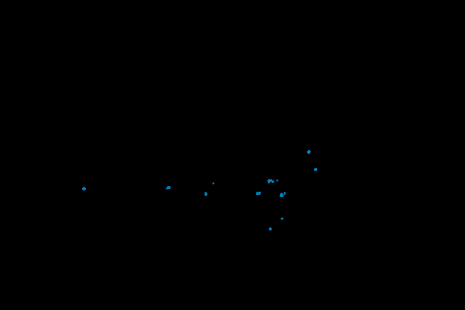
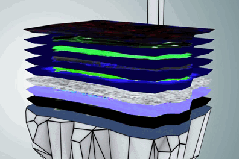

2D + time +...+...
google maps has harnessed the power of the cellphone, with distributed GPS sensor, to calculate for human flows

2D + time + individual mobility
Uber pioneered the personal assistant for transportation, and is so popular that relatively simple visualizations leads to real world decisions of where to emphasize which service type

3D + Time + ... + ...
3D Maps+time - essential for self driving cars, will give us an unimaginal amount of ancillary side benefits by gathering data

3D + data
Spacially contextual data, gives rise to a deep understanding of causation and correlation


SHARE THIS PAGE